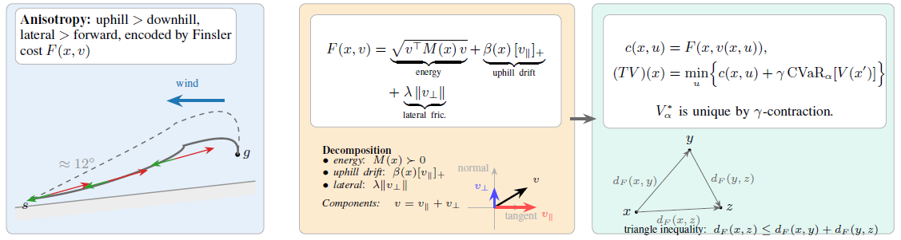

FiRL learns locomotion policies with a direction-dependent Finsler cost \(F(x,v)\) and a dynamic CVaR objective. The framework captures uphill/downhill asymmetry, lateral slip, and rare high-cost failures within a single risk-sensitive reinforcement learning objective.
Abstract
Robotic locomotion in complex physical environments frequently faces directional asymmetries, where traversal effort varies dramatically based on heading—such as climbing uphill versus moving downhill, or navigating lateral slip and terrain hazards.
Standard reinforcement learning approaches typically fail to explicitly capture these direction-dependent effects or insulate the system against rare, catastrophic tail-risk outcomes.
We introduce Finslerian Reinforcement Learning (FiRL), an RL framework that incorporates a Finsler metric into the locomotion cost, expressing effort as an asymmetric function \( F(x,v) \) that depends explicitly on state \( x \) and motion \( v \). To robustly handle extreme failures, FiRL minimizes a Conditional Value-at-Risk (\( \text{CVaR}_\alpha \)) objective using a novel actor-critic architecture.
Theoretically, we derive the risk-sensitive Bellman equation and prove that the corresponding CVaR–Finsler Bellman operator is a \( \gamma \)-contraction, ensuring convergence to a unique fixed-point value function whose underlying geometry induces an asymmetric path cost \( d_F \) satisfying the triangle inequality.
Empirically, across simulation benchmarks and real-world hardware trials, FiRL demonstrates vastly superior safety and energy efficiency over standard baselines. For example, on a \( 12^\circ \) sloped Hopper task, FiRL reduces worst-case (\( \text{CVaR}_{0.1} \)) impact forces by over 35% and total energy consumption by 15% while maximizing success rate.
FiRL Framework

FiRL builds a local cost geometry for locomotion and then trains an actor--critic policy to minimize tail-risk under that geometry. The key idea is that moving in different directions can have different physical costs: climbing uphill is not the same as descending, and lateral slip is not the same as forward motion.
Direction-dependent Finsler cost:
FiRL defines the one-step locomotion cost using a Finsler metric \(F(x,v)\), where \(x\) is the robot state and \(v\) is the induced motion direction:
\[ F(x,v) = w_e F_{\mathrm{energy}}(x,v) + w_d F_{\mathrm{drift}}(x,v) + w_f F_{\mathrm{friction}}(x,v). \]
The energy term measures basic motion effort, the drift term penalizes uphill motion, and the friction term penalizes lateral movement or slip. This lets the robot distinguish between actions that may look similar in Euclidean space but have very different physical consequences.
Quasi-metric path geometry:
Because \(F(x,v)\) can assign different costs to \(v\) and \(-v\), the induced path cost is generally asymmetric. For two states \(x\) and \(y\), FiRL defines:
\[ d_F(x,y) = \inf_{\tau:x\to y} \int_0^1 F(\tau(t),\dot{\tau}(t))\,dt. \]
This path cost satisfies the triangle inequality through path concatenation, while still allowing \(d_F(x,y) \neq d_F(y,x)\). In this sense, FiRL gives the policy an asymmetric geometric bias for direction-aware locomotion.
Dynamic CVaR Bellman objective:
To reduce rare but costly failures, FiRL optimizes a dynamic CVaR objective rather than only expected cost. The Bellman update is:
\[ \begin{aligned} V_\alpha(x) &= \min_{u\in\mathcal{U}(x)} \Bigl\{ c(x,u) + \gamma\,\mathrm{CVaR}_{\alpha} \left[V_\alpha(X')\right] \Bigr\}, \\ &\qquad X'\sim P(\cdot\mid x,u), \end{aligned} \]
where \(c(x,u)=F(x,v(x,u))\). This objective encourages the robot to avoid actions that may lead to high-cost tail outcomes, such as slipping, falling, or using excessive energy.
Distributional critic and actor update:
FiRL uses a distributional critic \(Z_\phi(x)\) to estimate the future cost distribution. The critic outputs quantiles of the return distribution, and the CVaR target is computed from the worst-cost tail:
\[ y_i = c_i + \gamma(1-d_i) \widehat{\mathrm{CVaR}}_\alpha \left[Z_{\phi^-}(x'_i)\right]. \]
The actor is then updated using advantages derived from this CVaR-based backup. This keeps the optimization practical while preserving FiRL’s main structure: direction-dependent cost plus tail-risk-aware learning.
Policy behavior:
In slopes, wind, stairs, and narrow-support settings, FiRL learns to avoid direct but risky motions when safer alternatives exist. Instead of only maximizing average performance, it learns cautious, energy-aware behaviors that reduce high-cost failures.
Results
We evaluate FiRL across simulation benchmarks and preliminary real-world robot trials. The main question is whether direction-dependent Finsler costs and CVaR risk optimization help robots move more safely and efficiently under slopes, lateral disturbances, contact-rich terrain, and noisy terrain estimates.
Across MuJoCo and Isaac Sim tasks, FiRL improves success rate, reduces normalized energy cost, and lowers worst-case tail risk compared with risk-neutral PPO and other risk-aware or geometry-aware baselines.
| Method | Success Rate (%) ↑ | Energy ↓ | CVaR0.1 Risk ↓ | Interpretation |
|---|---|---|---|---|
| PPO | 88.5 \( \pm \) 2.8 | 1.00 \( \pm \) 0.00 | 1.50 \( \pm \) 0.05 | Risk-neutral baseline |
| CVaR-PPO | 92.3 \( \pm \) 1.5 | 1.15 \( \pm \) 0.04 | 1.20 \( \pm \) 0.06 | Safer but more conservative |
| Distributional RL | 90.1 \( \pm \) 3.1 | 1.05 \( \pm \) 0.03 | 1.35 \( \pm \) 0.07 | Models return uncertainty |
| Riemannian PPO | 91.0 \( \pm \) 2.0 | 0.98 \( \pm \) 0.02 | 1.40 \( \pm \) 0.08 | Symmetric geometric baseline |
| Quasi-metric RL | 89.7 \( \pm \) 2.4 | 1.10 \( \pm \) 0.05 | 1.32 \( \pm \) 0.04 | Asymmetric value-geometry baseline |
| PPO + Finsler | 94.6 \( \pm \) 1.1 | 0.93 \( \pm \) 0.02 | 1.25 \( \pm \) 0.03 | Direction-aware but risk-neutral |
| FiRL (Ours) | 97.4 \( \pm \) 0.8 | 0.87 \( \pm \) 0.01 | 0.80 \( \pm \) 0.02 | Direction-aware and tail-risk-sensitive |
Table: Aggregate MuJoCo performance across SlopedHopper, Walker2d, and HalfCheetah tasks. Energy and CVaR risk are normalized relative to PPO. Higher success is better; lower energy and risk are better.

Energy-risk trade-off.
FiRL achieves the best trade-off between energy efficiency and tail-risk reduction.
Standard CVaR-PPO lowers risk but often spends more energy, while PPO+Finsler improves energy
but does not sufficiently reduce tail risk. FiRL combines both benefits.
High-Fidelity Quadruped Evaluation
We further evaluate FiRL on a Spot-like quadruped in Isaac Sim across three contact-rich terrains: ramp climbing, stair traversal, and narrow platform-beam crossing. These environments introduce richer dynamics, contact events, and failure modes than the MuJoCo tasks.
| Task | Method | Success ↑ | Energy / m ↓ | CVaR Cost ↓ | Fall Rate ↓ |
|---|---|---|---|---|---|
| Ramp Climb | PPO | 88% | 1.00 | 1.40 | 12% |
| CVaR-PPO | 92% | 1.09 | 1.05 | 8% | |
| FiRL | 96% | 0.95 | 0.78 | 5% | |
| Staircase | PPO | 78% | 1.00 | 1.55 | 26% |
| CVaR-PPO | 84% | 1.12 | 1.18 | 17% | |
| FiRL | 90% | 0.94 | 0.82 | 10% | |
| Platform Beam | PPO | 72% | 1.00 | 1.30 | 30% |
| CVaR-PPO | 80% | 1.16 | 0.98 | 19% | |
| FiRL | 88% | 0.89 | 0.74 | 11% |
Table: Isaac Sim quadruped results over 100 evaluation episodes. FiRL lowers tail cost and fall rate while avoiding the energy penalty often seen in standard risk-aware baselines.

Robustness to terrain inclination.
As the slope becomes steeper, PPO suffers a larger drop in success rate and a higher tail-risk cost.
FiRL remains more stable by using the Finsler cost to account for uphill effort and lateral motion.
Robustness to Perception Noise
FiRL uses local terrain information to compute the Finsler cost, such as the terrain normal and uphill direction. To test whether the method is overly dependent on perfect terrain estimates, we perturb the perceived terrain normal with Gaussian angular noise during evaluation.
| Slope Noise | Success Rate (%) ↑ | Energy ↓ | CVaR0.1 Risk ↓ |
|---|---|---|---|
| \(\sigma = 0^\circ\) | 98.0 | 0.84 | 0.72 |
| \(\sigma = 2^\circ\) | 96.5 | 0.86 | 0.75 |
| \(\sigma = 5^\circ\) | 94.2 | 0.89 | 0.79 |
Table: Perception-noise ablation averaged over 5 seeds and 100 evaluation episodes per seed. Noise is injected into the terrain-normal estimate used by the slope-dependent Finsler cost term.

Terrain-normal noise robustness.
FiRL degrades gradually under noisy slope estimates and maintains strong success rates even under moderate angular noise.
This suggests that the learned policy is not overly sensitive to small errors in the geometric cost estimate.
Preliminary Real-World Robot Trials
To complement the simulation results, we also conduct preliminary trials on a physical Spot robot. These trials are qualitative rather than a full hardware benchmark, but they show that the learned FiRL behavior can be executed on real hardware in narrow-support and discrete-foothold settings.

(a) Narrow bridge approach

(b) Constrained traversal

(c) Discrete footholds
Physical robot trials.
The Spot robot demonstrates cautious traversal behavior on narrow supports and discrete footholds.
These trials provide early evidence for real-world deployability, while a full perception-to-control
hardware benchmark remains future work.
BibTeX
@InProceedings{hossain2026firl,
title = {{FiRL}: Learning Anisotropic Value Geometry with Finsler Reinforcement Learning},
author = {Jumman Hossain and Nirmalya Roy},
booktitle = {Proceedings of the 43nd International Conference on Machine Learning},
series = {Proceedings of Machine Learning Research},
publisher = {PMLR},
year = {2026}
}